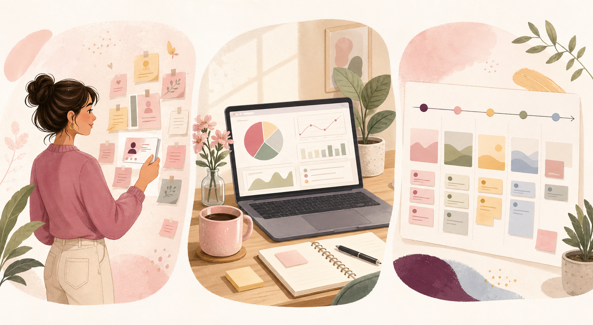

APM portfolio
Research notes, clean metrics, soft launch energy.User empathy + data + shipping discipline
I am Tabassum Khanum, a Product Lead at Webspiders Group, blending customer research, analytics, prioritization, and clear execution plans to build useful products.

APM portfolio
Research notes, clean metrics, soft launch energy.Ask better questions before building prettier answers.
"Tiny friction, big drop-off."
Interview insightI like product work where the answer is not obvious yet: listening to users, finding the sharpest problem, sizing the opportunity, and helping teams choose what to build next.
Product diary
Turn messy user comments into clear needs, patterns, and product questions.
Use metrics to reduce guesswork without losing the human context behind them.
Selected work
Diagnosed a first-session drop-off, mapped user confusion points, and proposed a guided setup flow with success metrics for activation.
Used cohort analysis and interview notes to identify why learners stopped after week two, then framed a lightweight habit-building experiment.
Reworked a listing journey for small sellers by reducing decision fatigue, improving field order, and clarifying quality checks before publishing.
Interactive product thinking
Strong candidate: validate with a small experiment, then roll out if activation improves.
How I work
Clarify the user, context, pain, business goal, and the decision to be made.
Combine interviews, funnel data, support themes, and competitor patterns.
Prioritize with impact, confidence, effort, risk, and learning value.
Define success metrics, guardrails, rollout plans, and follow-up questions.
Product toolkit
User interviews, problem statements, journey maps, opportunity sizing.
Funnels, cohorts, event taxonomy, SQL basics, experiment design.
PRDs, acceptance criteria, roadmap tradeoffs, stakeholder updates.
Wireframes, usability review, information architecture, copy clarity.
Let us talk
Replace the contact details below with your own, then share this portfolio link with recruiters, hiring managers, mentors, or classmates.